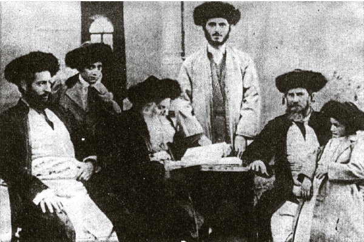

At the Side of the Rebbe Rashab
R’ Shneur Zalman Slonim, a Chabad rabbi in Chevron and Yaffo, brought the light of Chassidus to Eretz Yisroel. * He was called “my grandson” by the Rebbe Rashab in his letters to him. * About the life and activities of the Chassid who heard hours upon hours of maamarim in yechidus, to mark the day of his passing on 11 Tammuz.

R’ Shneur Zalman Slonim a”h was born in 5622/1862 in Chevron. His father was R’ Mordechai Dovber, who was the son of Rebbetzin Menucha Rochel (the daughter of the Mitteler Rebbe). Thus, R’ Slonim was the great-grandson of the Mitteler Rebbe.
R’ S. Z. was a genius in Nigleh and Chassidus and was granted smicha by the great rabbis of Chevron, R’ Shimon Menasheh Chaikin and R’ Eliyahu Saliman Mani, after he returned from his visit to the Rebbe. He married Rebbetzin Mushka, the daughter of his uncle R’ Levi Yitzchok Slonim.
One time, R’ S. Z. went to R’ Shimon Menasheh, whom the Tzemach Tzedek called a tzaddik, and asked him for a bracha.
R’ Shimon Menasheh excused himself, saying, “I need to bless you?!” But R’ S. Z. insisted. In the end, R’ Shimon Menasheh said, “By Jews it has to be kol mayanei boch, kol mayanei boch, kol mayanei boch (all my wellsprings [i.e. thoughts] are in you).” There is no doubt that this bracha was fulfilled in R’ S. Z., whose entire involvement and thoughts were in the holy Torah.
In the winter of 5645/1885, the brothers R’ Yehuda and Leib and R’ Mordechai Dovber Slonim traveled to Lubavitch. R’ S. Z. joined his father and uncle on this trip. However, while his father and uncle returned to Chevron after Pesach, R’ S. Z. remained in Lubavitch for the summer as a yosheiv (lit. sitter, a term referring to a young married man sitting immersed in Torah study and prayer full time). The Rebbe Rashab drew him very close and learned Chassidus with him.
The relationship between the Rebbe and the rav from Eretz Yisroel was very close, for they were the same age. The Rebbe spoke to him for hours, which was unusual. At this time, the Rebbe refused to accept the leadership. He once said to R’ S. Z., “I inherited the truth from my father and I don’t want to lose it.”
ESCORTING THE REBBE TO YALTA
In the winter of 5646, 1885/6, the Rebbe Rashab went to Yalta for health reasons. The Rebbe took R’ Slonim with him. R’ Slonim, who went in order to receive the Rebbe’s guidance in Avodas Hashem, remained in Yalta until after Pesach. While in Yalta, R’ Slonim was the Rebbe Rayatz’s teacher.
The Rebbe Rayatz described this trip in Likkutei Dibburim:
“I remember when we were in Yalta. Like a living image passes before me, the vision of our life there is still so vivid – the tall mountains, my father, my mother the Rebbetzin, my melamed R’ Shneur Slonim and I, taking a walk (nearly every day) at one in the afternoon until seven and sometimes eight.
“My father sitting and looking into a book he took with him, sitting and thinking, sitting and writing; R’ Shneur learning with me for about an hour and telling me to review what we learned and going to my father and both learning in that book, my father speaking and R’ Shneur listening, R’ Shneur asking and my father answering, my father explaining and R’ Shneur enjoying and his face shining.
“My mother sitting at a distance and reading some letter, a long letter, and on the ground near her a small briefcase with a bottle of milk and cake and occasionally giving me some and sending some with me to my father and R’ Shneur …”
On another occasion, the Rebbe Rayatz recounted:
“My father was in Yalta for Yud-Tes Kislev 5646, along with R’ S. Z. Slonim of Chevron. The first night of Yud-Tes Kislev they learned together. There were hardly any Chassidim there, just some local B’nei Torah. They may have known about the holiday of Yud-Tes Kislev, but they had no connection with Chassidus.
“What my father and R’ S. Z. learned then, I did not understand, but there were points that I also understood, relatively speaking …”
Once, when they were traveling by train, a telegram arrived for the Rebbe. At first they worried about what this urgent telegram could be about, but when the Rebbe opened it he laughed. It was from a woman who was having a hard time in labor in Lubavitch. The Rebbe said to R’ S. Z., “You aren’t a Chassid. If you were a Chassid, you would write down the time we received the telegram.” Of course, R’ S. Z. quickly wrote down the time, and afterward when he returned to Lubavitch, he inquired as to which family it was and what time the baby had been born. Needless to say, it was precisely the time that the Rebbe had opened the telegram.
Even before the trip, Rebbetzin Rivka went over to R’ S. Z. and warned him to take care and not let the Rebbe, her son, get tired and delve into Chassidus. R’ S. Z. faithfully stood guard, and each time he saw that the Rebbe was thinking deeply, he distracted him by telling him stories of Eretz Yisroel.
One time, the Rebbe delved into something very deeply, so deeply that he did not realize the rav was telling him stories. The rav, devoted to his mission, stretched out his hand in front of the Rebbe and began scratching his armpit very hard. The Rebbe sensed this and asked him, “Why are you scratching like that?”
The rav replied, “I want to scratch out (yid. ois kratzen, also used like the American idiom ‘to scrape up’) a nice story.” The Rebbe laughed when he heard this play on words.
The Rebbe also set a condition with him – the Rebbe demanded that on this trip, he not treat him with any particular display of respect, but act as though they were both equals. One time, R’ S. Z. was sitting on a bench and the Rebbe arrived. R’ S. Z. immediately stood up and the Rebbe was annoyed and said, “I told you not to give me honor.”
The Rebbe would walk with the rav for six hours every day in the Crimean Mountains. As they strolled, the Rebbe would give explanations on Shaar Ha’Yichud V’Ha’Emuna. One time, R’ S. Z. complained that he had no chavrusa with whom to review what he heard. The Rebbe told him that there is a maamer from the Alter Rebbe in which he says, “Make the quill and ink your friends.” Consequently, R’ S. Z. began writing down everything he heard from the Rebbe, and every day he would show what he wrote to the Rebbe. The Rebbe would correct a number of things.
On the trip back to Lubavitch, as they drank tea, the Rebbe wanted to see everything he had written. The Rebbe examined it a bit and then threw it all into the oven. R’ S. Z. was so upset that he had not made another copy. The Rebbe saw how upset he was and said, “You have enough from what you heard and if you have any questions, ask me and I’ll answer you.” One maamer of R’ SZ’s notes remains, on the words “V’Chol Ha’Am 5647,” which apparently was looked over by the Rebbe Rashab.
IN ERETZ YISROEL
Before R’ S. Z. returned to Chevron, the Rebbe wrote to his father-in-law and uncle, R’ L. Y. Slonim, in praise of him, and offered to support R’ S. Z. at his table so that he could continue learning Chassidus. For then he would not “have to be concerned about material things in actuality, especially when he has no idea of how to support himself, whether in a spiritual venture or a material venture, and this causes further distraction in greater measure and with greater force, and then he will be unable to concern himself with the life of the soul at all, and in this way they will destroy with their very hands etc., G-d forbid.”
The Rebbe was aware of the fact that R’ L. Y. had just lost money in a tobacco business, and yet still wanted to support his son-in-law, even though as he wrote to the Rebbe, “I thought a lot about improving his situation, and still haven’t found any good idea for him so that he can sit in his home in Eretz Yisroel in peace and study Torah.” The Rebbe wrote that he would also try to get help for him. The Rebbe did so, in the years that followed. He collected and sent him 100 rubles a year, aside from the help that he sent for the family in any case. The Rebbe told the father-in-law to calculate the son-in-law’s needs, and not in a stingy way, and based on that he would know how much to take from the general distribution.
After he returned to Eretz Yisroel, an exchange of letters began between him and the Rebbe Rashab. In the Rebbe Rashab’s Igros Kodesh there are dozens of letters addressed to him in which he responds to his questions in Chassidus and Avodas Hashem. One of the famous letters is one in which the Rebbe explains the advantage of contemplating Chassidus while wearing tallis and t’fillin. R’ Slonim showed the letter to his acquaintances, but in Lubavitch they didn’t know of its existence until 5651/1891, when R’ Mordechai Dovber took a copy of the letter with him and showed it to three great Chassidim: R’ Chanoch Hendel Kurenitzer, R’ Shmuel Boruch of Warsaw, and R’ Meir Mordechai of Borisov. They publicized the letter among the Chassidim without the Rebbe’s knowledge.
Before he left, the Rebbe told him to search in Eretz Yisroel for the descendants of R’ Yisroel Yaffe of Kopust, and to find out from them if they had letters from the Rebbeim.
R’ S. Z. located the descendants and did indeed find a veritable treasure, the kuntres Pirush HaMilos of the Mitteler Rebbe. Another maamer he discovered was part of Imrei Bina Shaar HaT’fillin, which hadn’t been published yet. Over the years, he sent many other manuscripts to the Rebbe. His devotion to this cause was so great that the Rebbe had to send him a letter instructing him not to overspend on manuscripts and not to buy them at a price that was more than they were worth.
In 5649/1889, R’ S. Z. was one of three menahalim who started Yeshivas Magen Avos in Chevron together with his childhood friends, R’ Eliezerov and R’ Mendel Na’eh. Together with them he bought the property and was responsible for paying the salaries of the teachers.
In the years that followed, the Rebbe told his father to get involved in the esrog business and to send the esrogim to Europe, in order to prevent the proliferation of esrogim from Corfu which were suspected of being grafted. R’ S. Z. helped his father with this, which enabled the Jews of Russia to have kosher esrogim.
***
R’ S. Z. experienced many tragedies. Out of the 27 children born to him from his two wives, only seven survived. When the Rebbe’s mother heard of one of the tragic losses of a child, she immediately said it was not due to sickness and included an old segula from the Alter Rebbe in her son’s letter.
In 5653/1893, his first wife Mushka died in her youth. Aside from this, R’ S. Z. was sick and weak and the Rebbe often asked how he was and was concerned about his health.
In 5660/1900, the gaon R’ Shneur Zalman of Lublin told him to liquidate his properties in Chevron and to accept the rabbanus in Yaffo. After receiving the approval of the Rebbe Rashab, he took the position and served as the rav of the community in Yaffo for 37 years until he died.
Upon his arrival in Yaffo, a beautiful welcome was prepared, which was attended by rabbanim, public figures, and the Chassidim of Yaffo. On the following Shabbos, the heads of organizations and the distinguished men of Yaffo gathered and they celebrated with the new rav for many hours. Unlike the celebrants, there were those who disapproved of this appointment, but the heads of the Chabad settlement in Yaffo supported him and had letters of support published in the newspapers. He also had letters of support from the Rebbe.
R’ S. Z. Slonim did not delay, but as soon as he arrived in the city, he began his holy work. His first effort was to build a mikva for women in the Neve Sholom neighborhood, because until then the mikva was far from the Jewish settlement in the old city of Yaffo, and was deep in the earth which made it dangerous. He organized the Chassidishe sh’chita and built a shul for Chabad Chassidim in Neve Sholom. He would review Chassidus every Shabbos for the Lubavitcher Chassidim.
He was a member of the chief rabbinate of Tel Aviv until his last day. He served in the Yaffo-Tel Aviv rabbinate for 37 years.
He was an excellent orator. He would beautifully express original ideas.
He judged disputants as a rav or as a voluntarily selected adjutant, and was gifted with the ability to immediately discern truth from falsehood. He had a quick grasp. He would solve complicated matters with his sharp intellect. In particular, he had a keen grasp of business matters and the ways of the world. He hated injustice and he absolutely did not allow the sides to use delaying tactics. He liked being mesader kiddushin; he did not want to arrange divorces and tried to make peace between quarreling couples instead, and he was mostly successful. He was never involved in arranging a divorce.
When R’ Shlomo Zalman Havlin, the Rebbe Rashab’s shliach to Eretz Yisroel, arrived, R’ S. Z. planned on leading a delegation to welcome him at the port in Yaffo. However, the night before, he came down with a high fever and was unable to leave the house. He asked the members of the delegation to stop by at his house and he made a great effort to sit and speak with them for a few hours.
He lived and worked in Yaffo and his net was spread as far as Chevron. In 5665/1905, a Jew by the name of Romano wanted to sell his property in Chevron to Arabs. R’ Slonim was one of those who fought this and was able to buy the courtyard in it, which is where the yeshiva was located a few years later. When Yeshivas Toras Emes was founded in Chevron in 5672, the opportunity arose for R’ Slonim to move to Chevron to help the new yeshiva. The difficult economic state in Yaffo was a factor in his considerations, but the Rebbe told him, “How can you leave Yaffo when so much work and effort went into it until it reached its present state?”
R’ S. Z. Slonim passed away on 11 Tammuz 5696/1936. Hundreds of Jews attended his funeral and he was eulogized by the rabbanim of Tel Aviv.
HIS FAMILY
His first wife, Mushka, daughter of Levi Yitzchok Slonim, was born in Chevron in 5622. She died in her 31st year in Yaffo on 16 Nissan 5653 and was buried in Yerushalayim. Only two of her twelve children remained alive – Yaakov Yosef and Menachem Mendel Shmuel.
His second wife, Chana Mina, daughter of Shneur Shlomo Zalman Slonim was born in Chevron in 5636. She was an eishes chayil and G-d fearing, possessed of many qualities and devoted to the needs of the poor. Her home was open to all who were in dire circumstances. She gave birth to fifteen children, out of whom five survived. She suffered greatly during the expulsion from Yaffo during World War I, when her husband was abroad, because he had left before the war and could not return to Eretz Yisroel during the war. She was cut off from her entire family along with her small children. A few days before they were liberated from the Turks, she became sick with pneumonia. She died on 26 Tishrei 5679. Her surviving children were Refael Yehuda Leib, Esther Malka, Menucha, Levi Yitzchok and Sima.
D. Levanon. "At the Side of the Rebbe Rashab." Beis Moshiach, no. 883 (June 13, 2013).